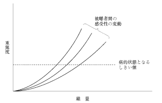

放射線のヒトへの影響は、影響の現れる個人（身体的/遺伝的）、影響の現れる時期（早期/晩期）、線量-反応関係（確定的/確率的）の3つの観点から分類される。
| 確定的影響 | 確率的影響 | |
|---|---|---|
| しきい線量 | あり | なし |
| 線量-反応関係 | S字状曲線 | 直線的（線量に比例） |
| 線量と重篤度 | 線量↑ → 重篤度↑ | 線量↑ → 発生確率↑ （重篤度は変わらない） |
| 防護の考え方 | しきい線量以下に抑える | 可能な限り低減（ALARA） |
| 影響 | しきい線量（急性被曝） |
|---|---|
| 骨髄：造血機能低下 | 0.5 Gy |
| 精巣：一時的不妊 | 0.15 Gy |
| 精巣：永久不妊 | 3.5〜6.0 Gy |
| 卵巣：不妊 | 2.5〜6.0 Gy |
| 水晶体：白内障 | 5.0 Gy |
| 皮膚炎・脱毛 | ― |
| 骨壊死 | ― |
放射線の影響における線量−効果関係を図に示す。
実線で示される影響に属するのはどれか。2つ選べ。

【解説】図はしきい線量が存在し、それを超えるとS字状に重篤度が増加する確定的影響の線量-効果関係を示している。白内障（a○）と骨壊死（b○）は確定的影響。白血病（c×）・甲状腺癌（d×）は放射線発がんで確率的影響。遺伝的影響（e×）も確率的影響。
人体における放射線影響の発現でしきい線量があるとされるのはどれか。2つ選べ。
【解説】しきい線量があるのは確定的影響。不妊（精巣0.15Gy、卵巣2.5Gy）と白内障（5.0Gy）は確定的影響でしきい線量がある（a○、d○）。口腔癌（b×）・髄膜腫（c×）・白血病（e×）は放射線発がんで確率的影響（しきい線量なし）。